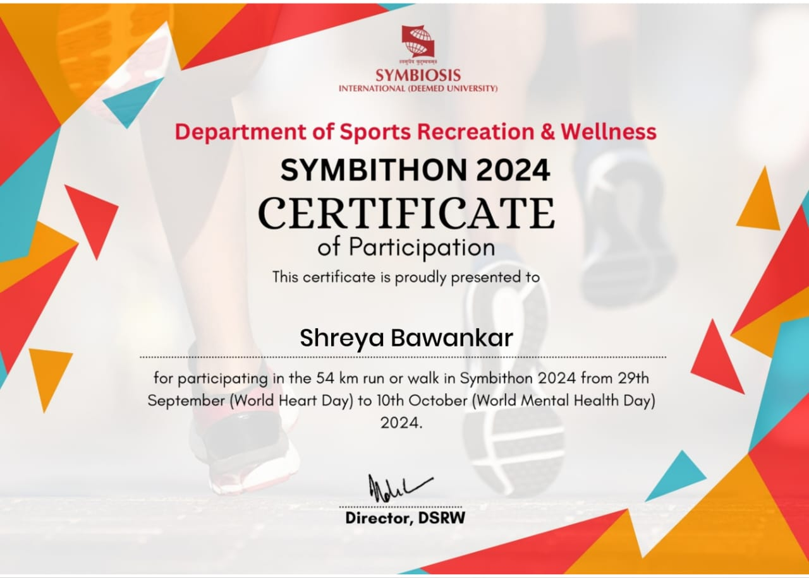
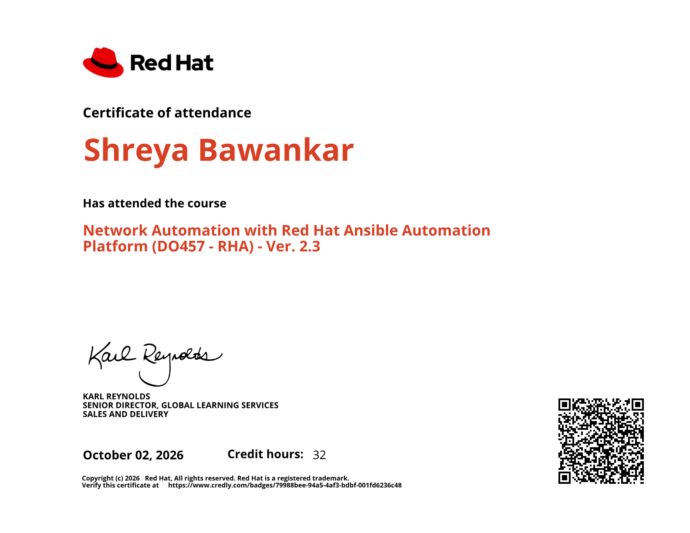
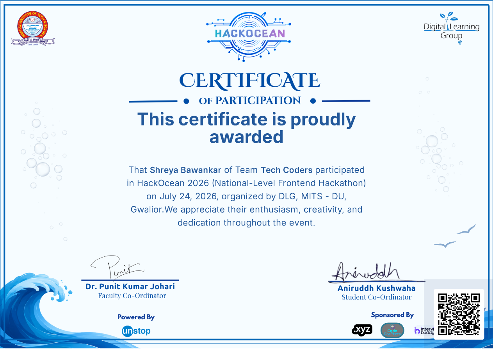
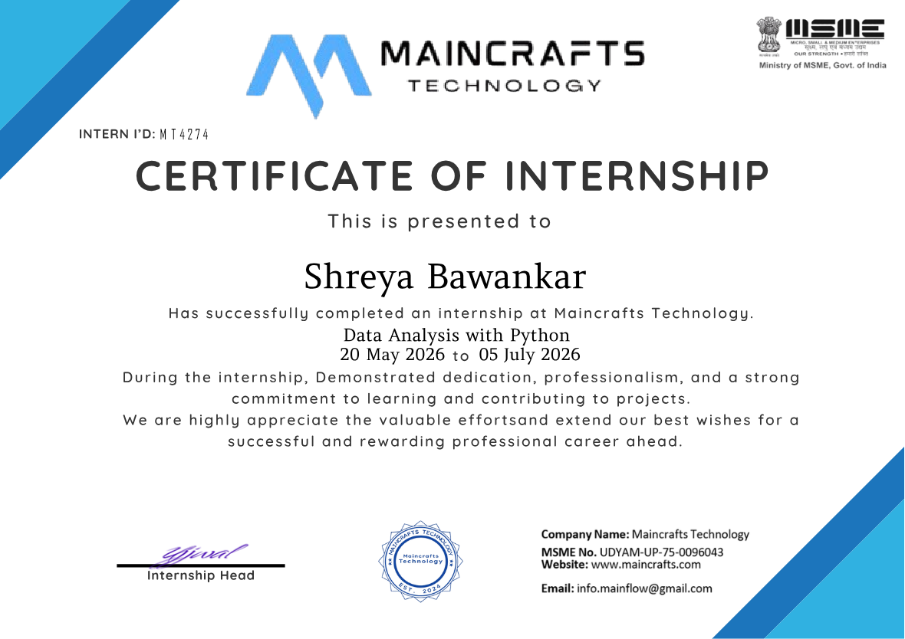
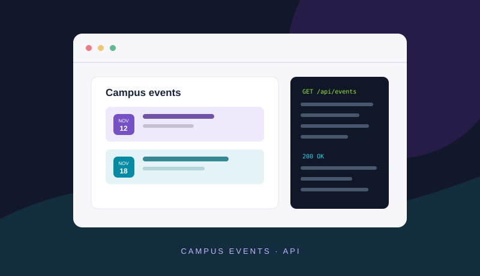
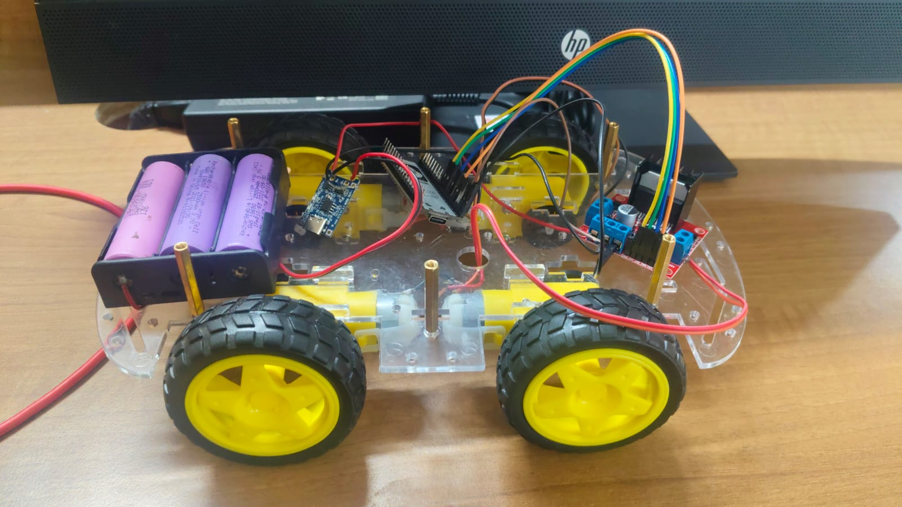
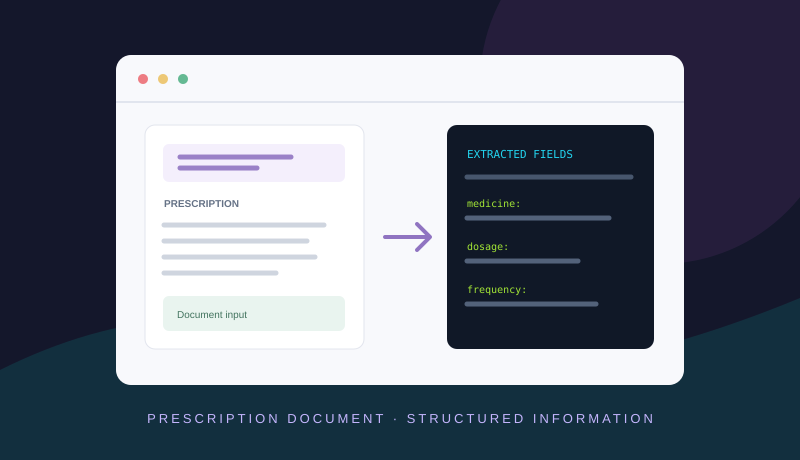
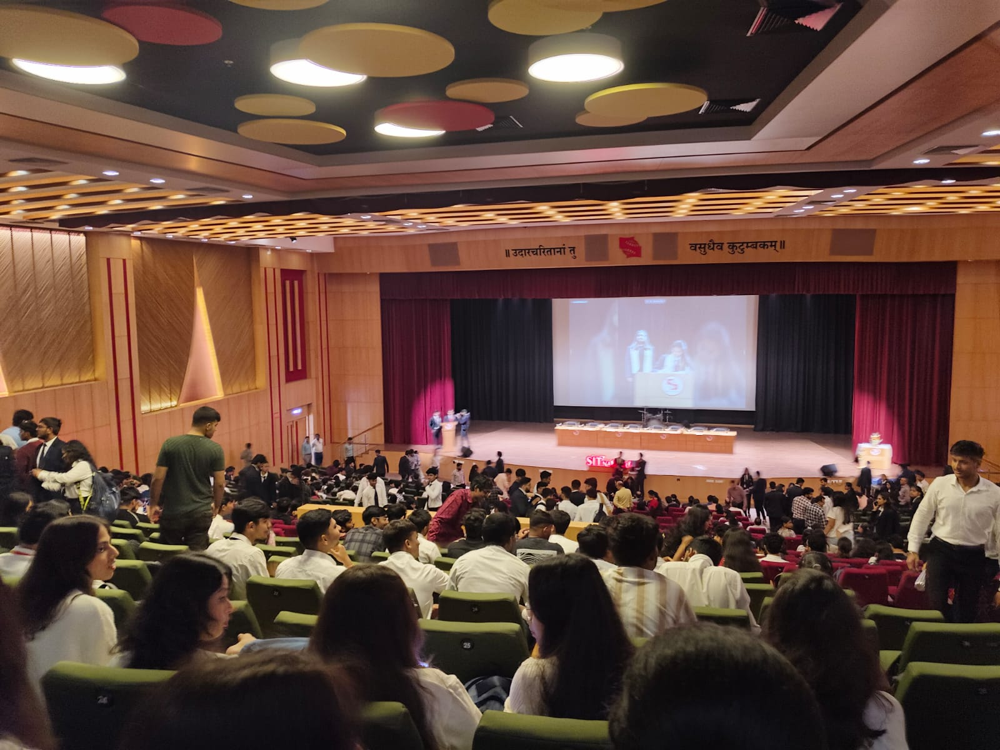
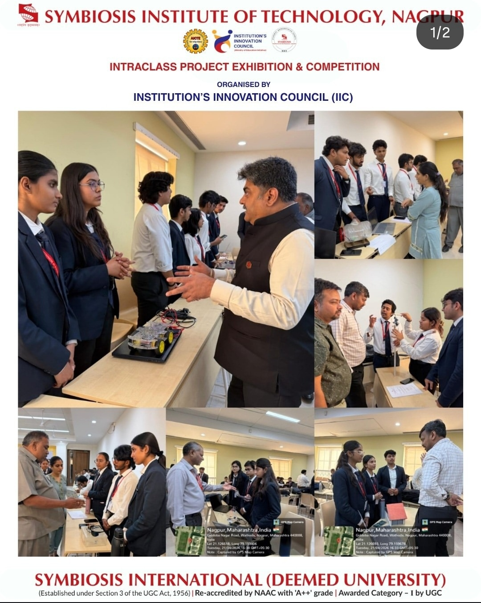
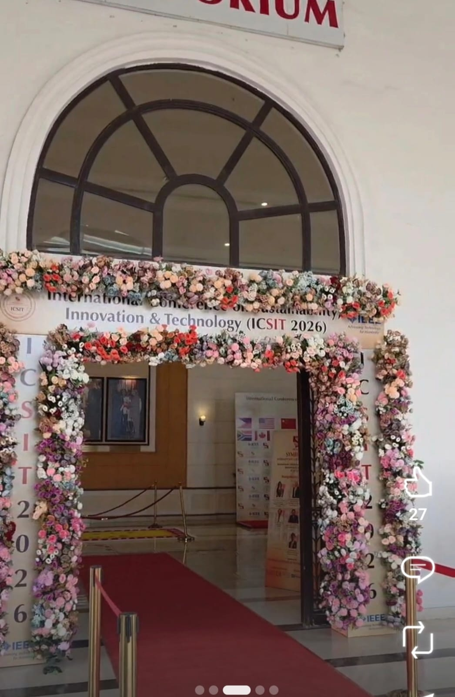

CURRENT · SEMESTER V
BTech, Computer Science & Engineering
Symbiosis Institute of Technology, Nagpur
Currently pursuing · Expected graduation: 2028COMPUTER SCIENCE STUDENT · NAGPUR
I’m studying Computer Science and Engineering at Symbiosis Institute of Technology, Nagpur. I enjoy building projects that bring software, AI, and hardware together.
I am a B.Tech Computer Science and Engineering student at Symbiosis Institute of Technology (SIT), Nagpur, with a strong interest in software development, artificial intelligence, machine learning, and embedded systems. I enjoy exploring new technologies, solving real-world problems, and transforming ideas into practical applications through hands-on projects.
My learning journey focuses on building a strong foundation in programming, data structures, problem-solving, web development, and intelligent systems. I am particularly interested in understanding how technology can be used to create efficient, scalable, and user-friendly solutions.
Throughout my academic journey, I have worked on diverse projects, including a campus event management API, an e-signature platform, an ESP32-based gesture-controlled car, and a medical prescription information extraction agent project. These experiences have helped me explore different areas of computer science, strengthen my programming skills, and understand the importance of designing solutions that address practical needs. I am also developing a real estate price prediction platform using regression models, with the goal of combining property-related data with geographical and environmental factors to improve prediction insights.
Beyond academics, I believe that collaboration, continuous learning, and active participation are essential for personal and professional growth. I have participated in the HackOcean 2026 National-Level Frontend Hackathon as part of Team Tech Coders and have also participated in the Stranger Tech event and volunteered with IEEE. These experiences have given me opportunities to engage with technical communities, collaborate with others, and learn from activities beyond the classroom.
I am continuously working to improve my technical knowledge, communication skills, creativity, and problem-solving abilities. My goal is to gain practical industry experience, contribute to meaningful software projects, and grow into a versatile software engineer who can build innovative technology-driven solutions.
I am always eager to learn, experiment with new ideas, take on challenges, and connect with people who share an interest in technology and innovation.
Maincrafts Technology · 20 May–05 July 2026
Internship focused on Data Analysis with Python, with hands-on learning and contributions to projects.
Symbiosis Institute of Technology, Nagpur
Currently pursuing · Expected graduation: 20287.5 CGPA · Through Semester V
CBSE · Hiwari Nagar, Nagpur
2023 · Class XII · 80%CBSE · Nagpur
2021 · Class X · 85%Tools and areas I have used in coursework and projects.
JavaScript · Python · C/C++ · PL/SQL
Add only languages you can discuss confidently.HTML · CSS · JavaScript
Web concepts and interface development.Multi-agent AI · ESP32 · IoT
Applied in project experiments.Problem solving · Prototyping · Collaboration
Areas I enjoy practising and developing.Add verified items here when ready.

Certificate of participation in the 54 km run or walk, held from 29 September to 10 October 2024.
View certificate ↗
Course attendance certificate · DO457-RHA · 32 credit hours.
Preview image ↗
Participation certificate · Team Tech Coders · National-Level Frontend Hackathon, DLG, MITS-DU Gwalior.
Preview image ↗
Internship certificate · Data Analysis with Python · 20 May–05 July 2026.
Preview image ↗Projects I have described in this portfolio. Repository links open my GitHub projects page.

An API-focused project for managing campus events. Add the endpoints, features, and tools you implemented.
Find on GitHub ↗
A digital signature platform project. Add the tools used and your specific contribution.
Find on GitHub ↗
An ESP32 car controlled through gestures. Add the sensors and implementation details you used.
Find on GitHub ↗
A project for extracting information from medical prescriptions. Add the specific fields, processing steps, and tools you implemented.
Find on GitHub ↗I have linked to my GitHub repositories page because I could not verify individual repository links for these projects. Browse my GitHub repositories ↗
Taking part in campus events and supporting student activities.
A few moments from campus and student life.
A sunny view of the Symbiosis campus and its landscaped grounds.

Students gather in the auditorium for a college program.

Presenting our ESP32 gesture-control car and sharing the project with visitors at SIT Nagpur.

ICSIT 2026, held at Symbiosis Institute of Technology, Nagpur.
CONTACT
For project discussions, academic collaboration, or opportunities to learn.
SITE INFORMATION
When this portfolio is served, it records basic visit details (visit time, requested page, device, and IP address) to help understand visitor traffic. These details do not identify anyone by name. No third-party tracking services are used. Contact Shreya directly if you would like to introduce yourself or discuss a project.
Visits are logged locally on the server and are viewable by the owner on the password-protected dashboard.
Visiting this portfolio? Let Shreya know you stopped by!